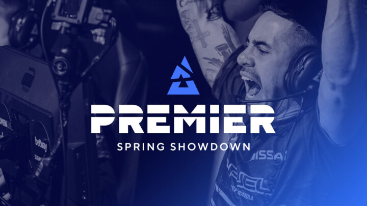

Which teams will shine at BLAST Premier Spring Showdown 2021?
With BLAST still pushing out amazing production quality and a bunch of events, big teams are ready to jump onto another opportunity to play in one of their tournaments.
The next one on the calendar is the BLAST Premier Spring Showdown 2021, held from the 13th of April until the 18th. With some of the top teams attending, will this be another big clash where Gambit can prove their worth or will this be yet another win for a storming Heroic?
A one versus four clutch was the end of Gambit’s dream run in the ESL Pro League Finals, but we are now already heading into a new tournament with more action soon to follow. Most of the big teams attending the EPL finals are also playing in the BLAST Premier Spring Showdown, meaning the results might be slightly more predictable than the previous tournament. Astralis, Gambit and Liquid will be representing the top five of the world, yet they might not be the biggest favourites.
Heroic to strike twice?
The Danes of Heroic had a bit of a slump recently and decided to swap up some players in the roster. A bold move some would say, but one that quickly paid off. With a commanding performance in the ESL Pro League Finals, they were able to take the win against Gambit. The honeymoon period of Heroic works out well for now and they might still have some parts in their game they are working on themselves.
This might mean that there is a chance they can keep improving and challenge for a new stint in the top five of the world, yet it remains to be seen. Now already having showed a bunch of their tactics in a best-of-five match and of course the matches before that, other teams will be able to read into the team better and that might come to haunt the Danish line-up
Astralis is on the good side of things
Another strong Danish line-up is of course that of Astralis, and they’ll be quite happy about their spot in the brackets. With them having troubling results against FURIA and Gambit in recent events, they are now luckily on the complete other side of the bracket. This should play into their favour of coming closer to the top once more, and possibly fight for another title.
The team is currently still the third best team in the world, but their results have been far from what they’ve shown before. The chance of a big turnaround doesn’t seem all that high however, with some other teams actually improving rapidly in the recent events. Heroic and Gambit still seem to be the biggest contenders for the title, and thus Astralis have to prove the people they are still one of the best.
Can CIS still stay on top?
Looking at that Gambit line-up, they are so incredibly strong, once more rising when few would expect them to. But their strong performance is now starting to get challenged, and some other CIS teams have stopped doing all that well. All the regions hope remains on this team, and with a spot in the finals of EPL it seems they still have what it takes.
They world ranking is ever improving, thus it would seem logical they would have a chance that they could make it into the finals here again. But as said before, their part of the bracket fields the hardest opponents, making it quite possible for them to be kicked out earlier than they would like themselves.